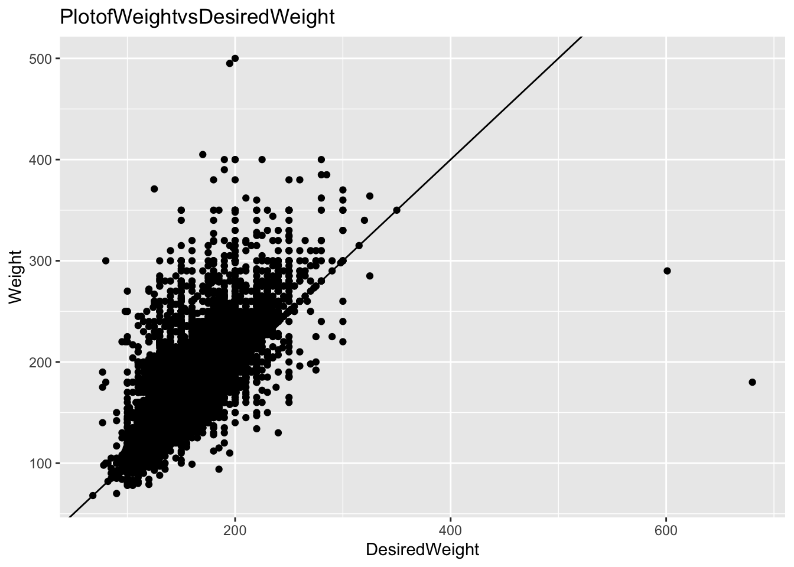
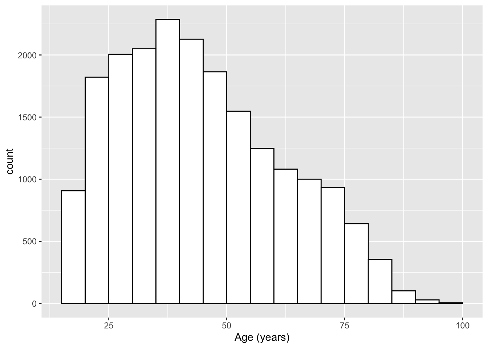
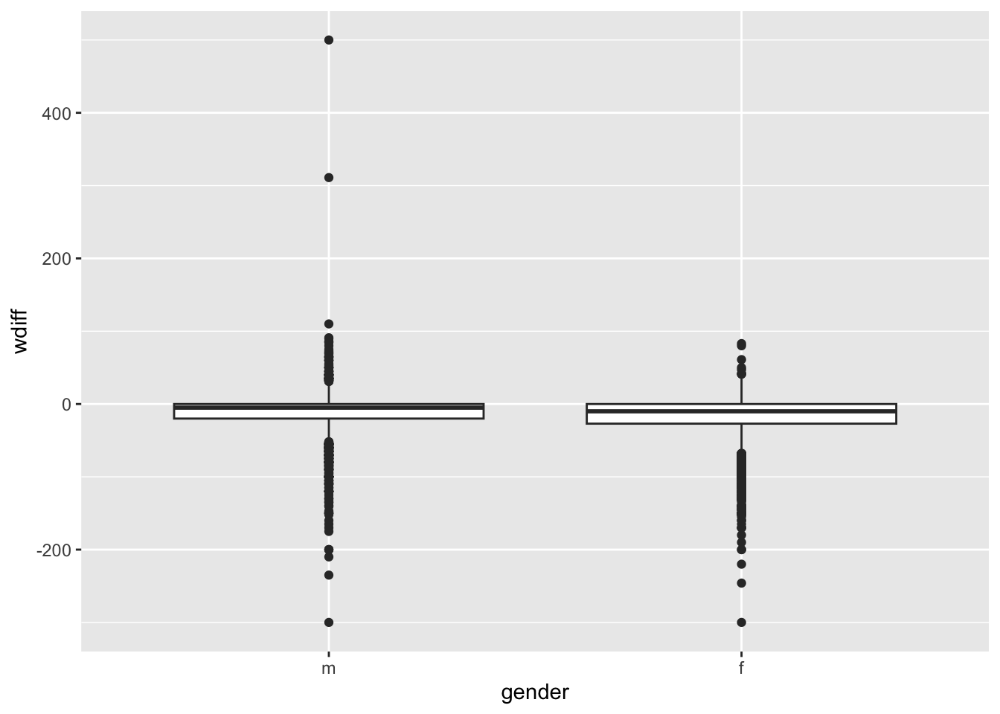

3 Group Task
Setting up for the analysis...
## 'data.frame': 20000 obs. of 9 variables:
## $ genhlth : Factor w/ 5 levels "excellent","very good",..: 3 3 3 3 2 2 2 2 3 3 ...
## $ exerany : num 0 0 1 1 0 1 1 0 0 1 ...
## $ hlthplan: num 1 1 1 1 1 1 1 1 1 1 ...
## $ smoke100: num 0 1 1 0 0 0 0 0 1 0 ...
## $ height : num 70 64 60 66 61 64 71 67 65 70 ...
## $ weight : int 175 125 105 132 150 114 194 170 150 180 ...
## $ wtdesire: int 175 115 105 124 130 114 185 160 130 170 ...
## $ age : int 77 33 49 42 55 55 31 45 27 44 ...
## $ gender : Factor w/ 2 levels "m","f": 1 2 2 2 2 2 1 1 2 1 ...3.1 Q1
ggplot(data=cdc,mapping=aes(x=wtdesire,y=weight))+ geom_point()+ labs(title="PlotofWeightvsDesiredWeight",x="DesiredWeight",y="Weight")+ geom_abline()
3.2 Q2
ggplot(cdc, aes(x = age)) +
geom_histogram(binwidth = 5,
boundary = 0,
fill = "white",
color = "black") +
scale_x_continuous(name = "Age (years)")
3.4 Q4

It appears on average there is a slightly greater difference in current and desired weight for women than for men, though this is difficult to see from the box plot alone. Numerical summaries could be used to clarify this like so:
## Min. 1st Qu. Median Mean 3rd Qu. Max.
## -300.00 -20.00 -5.00 -10.71 0.00 500.00## Min. 1st Qu. Median Mean 3rd Qu. Max.
## -300.00 -27.00 -10.00 -18.15 0.00 83.00However to check rigorously if this result is significant, we would need to conduct a hypothesis test, which we will cover later in the course.